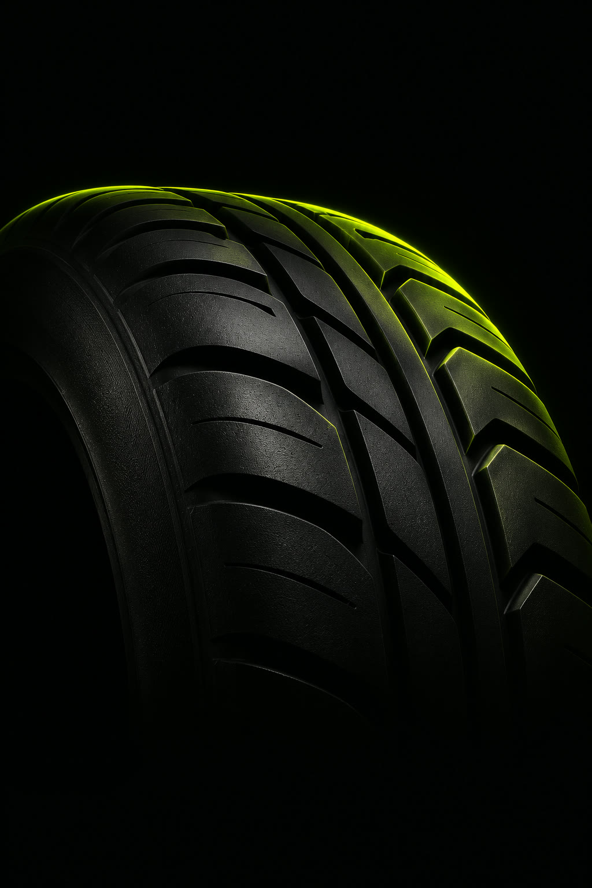
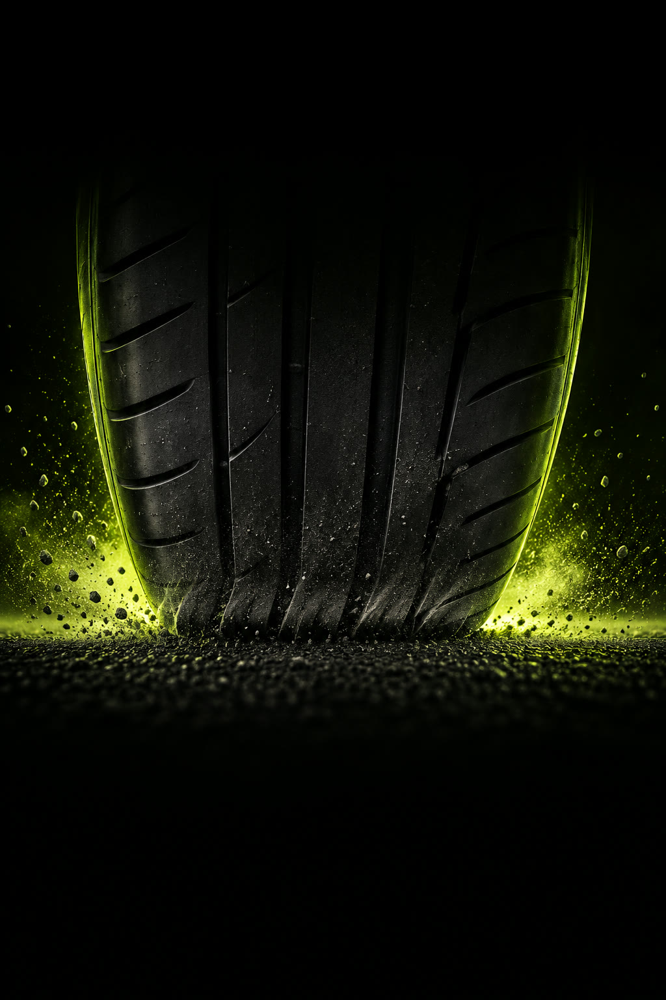
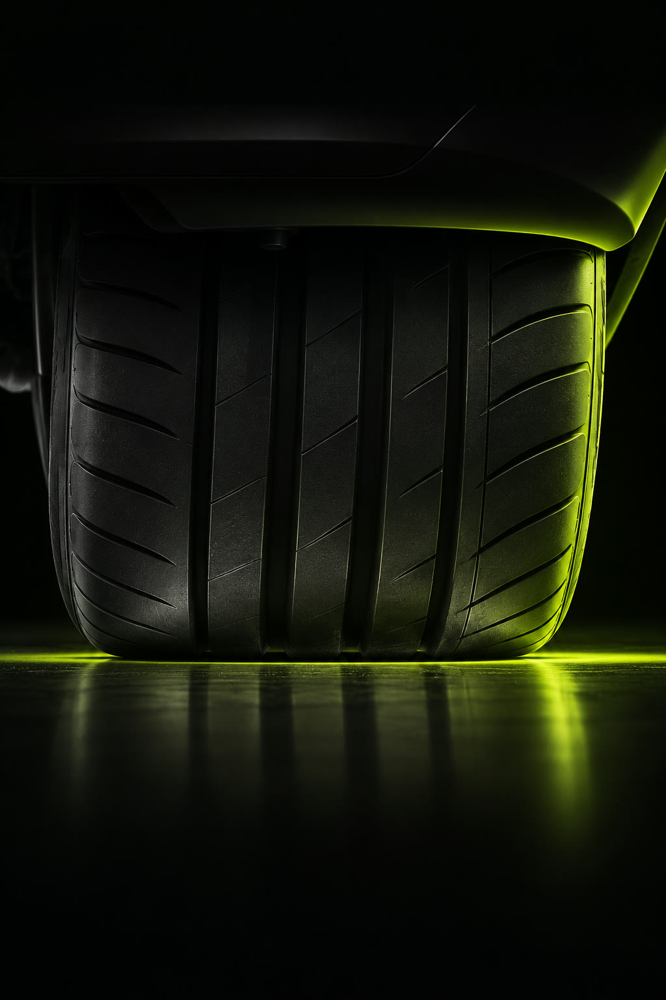
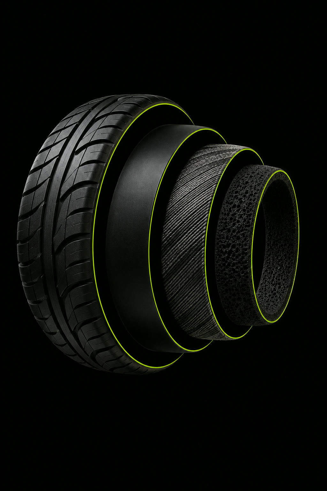
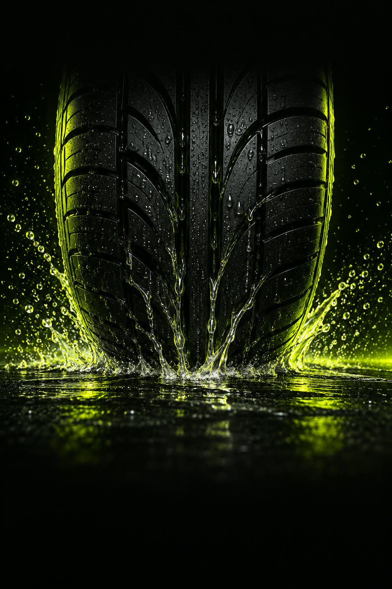

O carro mudou.
E o pneu?

SimulaçãoFeito para o torque.
O pneu do carro elétrico e híbrido.


A dor
Torque
Chega inteiro desde a saída. O pneu comum se gasta de 20% a 30% mais rápido.
Peso
A bateria pede índice de carga maior. O pneu errado reprova o carro na vistoria.
175/55 R16
A medida do elétrico mais vendido do país não existia no Brasil quando o carro chegou.
Autopapo e Garagem360. Detalhes na camada Estudo. Fotos: simulação.
Qual é o seu carro?
Emplacamentos: ABVE, 2026. Pneu: simulação em 3D, nenhum pneu foi fabricado.

A solução · Quatro camadas
Garra
Banda mais rígida e composto resistente à abrasão. É onde o torque chega primeiro.
Giro
Composto de baixa resistência ao rolamento. Mais quilômetros por carga.
Fibra
Carcaça com índice de carga XL, dimensionada para o peso da bateria.
Calma
Blocos com passo variável e espuma acústica. O silêncio do elétrico, preservado.
Simulação. Especificação de projeto: nenhum pneu foi fabricado ou ensaiado.

SimulaçãoDesenhado para a rua brasileira.
Chuva, buraco, guia e o peso da bateria entram no projeto desde a primeira linha.
Os números · Brasil, 2026
1.000.000
de carros eletrificados já rodam no Brasil.
17,7%
das vendas de carros novos. Um em cada seis.
241.253
carros em apenas seis modelos, vendidos em dez meses.
Autopapo, CNN Brasil, Vrum e Canal VE, com dados da ABVE.
A expectativa
965.012
pneus na primeira troca desses seis modelos. 9 medidas atendem todos.
Cada ponto são mil pneus. Um bloco para cada modelo.
276.244 pneus só do Dolphin Mini. A medida dele não existia no Brasil quando o carro chegou.
Conta: quatro pneus por carro sobre os emplacamentos de janeiro a outubro de 2026. Não é previsão de vendas.
Elas fazem pneu para tudo. A EVTOR, só para o elétrico.
As marcas grandes têm uma linha elétrica dentro de um catálogo de centenas de produtos. Aqui o catálogo inteiro começa pelo carro do cliente.
O plano
- MarcaRegistrar EVTOR no INPI, nas classes de pneus e de comércio.
- FábricaProdução terceirizada. Cotação das dez medidas da primeira fase.
- HomologaçãoCertificação do Inmetro e etiqueta de eficiência, antes de fechar o molde.
- PilotoUm lote de 175/55 R16 para donos de Dolphin Mini, em uma capital.